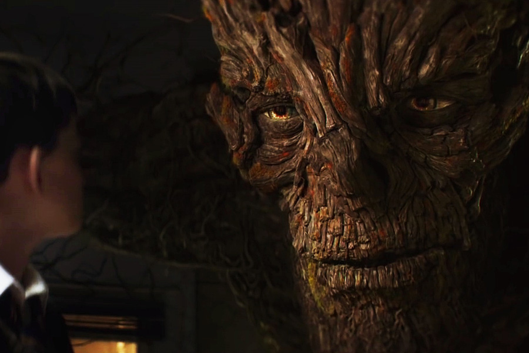
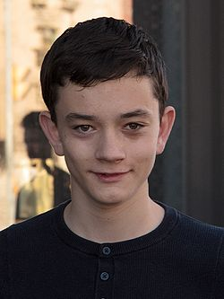
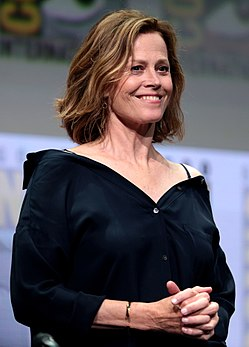
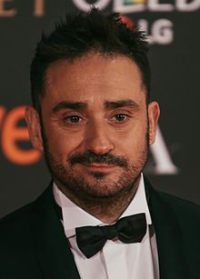

Sinopsis: Connor (Lewis MacDougall) es un joven inglés de 13 años que, tras la separación de sus padres, se convierte en el hombre de la casa y el encargado de llevar las riendas del hogar. Con su joven madre (Felicity Jones) enferma, el pequeño intentará superar todos sus miedos y fobias con la ayuda de un monstruo (Liam Neeson). Fantasía, cuentos de hadas e historias imaginarias del pequeño se verán las caras no solo con la realidad, sino con su fría y calculadora abuela (Sigourney Weaver).


Conor es un niño que debe enfrentarse a la ausencia de su padre y las visitas a una abuela con la que no termina de congeniar como trasfondo a la enfermedad de una madre que sufre de cáncer.
Formado por hojas y ramas, pero de aspecto humano, el «Monstruo» es un ser bondadoso que trata de ayudar a las personas a través de métodos que, quizás, no resulten agradables en un primer momento. Sus fábulas puede que contengan apreciaciones morales discutibles, pero sus enseñanzas solo pueden llevarse a cabo cuando el sujeto ha entendido la esencia de la historia.
Aunque en la película ésta se llamaba Lizzie, en el libro es simplemente «Mamá», tal y como se refiere a ella Conor. Una mujer que, a pesar de adorar a su hijo, no puede evitar mentirle tanto a él (como a ella misma) acerca de la certeza de que va a morir en un futuro próximo.
El padre de Conor se trasladó a América 6 años antes de los acontecimientos del libro con una nueva esposa. En el momento en que la madre de Conor yace enferma, su padre regresa a Inglaterra para visitarle durante unos días, aunque regresa pronto a América para asistir al nacimiento de su nuevo hijo.

Obsesionada con mantenerse joven durante toda la vida, la abuela de Conocer es una agente de policía que sigue tiñéndose los cabellos para que no aparezcan las canas. Presumida y egocéntrica, no termina de encajar con su nieto, especialmente porque carece de la empatía necesaria para comprender a cualquier otra persona que no sea ella misma.

Juan Antonio García Bayona, más conocido como J. A. Bayona, es un director de cine y productor español. Es autor de películas como El orfanato (2007), Lo imposible (2012). Inició su carrera dirigiendo anuncios de televisión y videoclips. En 2013 recibió el Premio Nacional de Cinematografía en el marco de la 61ª edición del Festival Internacional de San Sebastián.